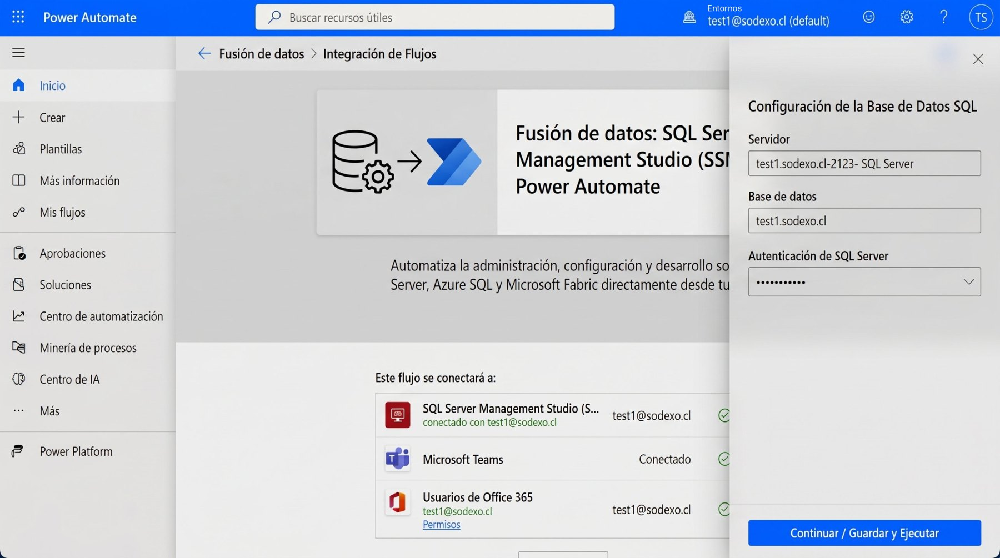
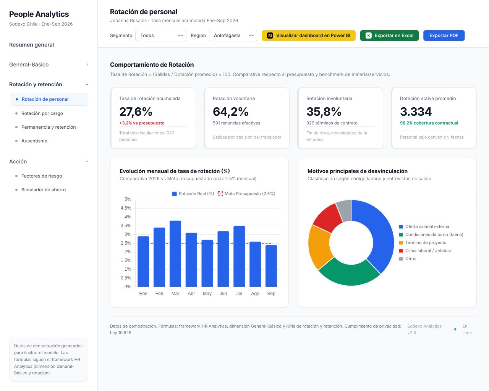

People Analytics · Power BI · Power Automate
Investigación en DAX, limpieza de la base de datos en Direct Lake y dashboards profesionales en Power BI y Power Automate para entender cuánta gente se va, por qué se va y dónde se concentra la rotación.
DAX research, database cleaning in Direct Lake and professional dashboards in Power BI and Power Automate to understand how many people leave, why they leave and where turnover concentrates.
Los datos de personal vivían en SQL Server. Con Power Automate armé un flujo de fusión de datos que conecta la base SQL con Microsoft Teams y los usuarios de Office 365, para que la información llegue limpia y actualizada al modelo.
Staff data lived in SQL Server. With Power Automate I built a data-merge flow that connects the SQL database with Microsoft Teams and Office 365 users, so information reaches the model clean and up to date.

Definí y probé las métricas de rotación directamente sobre el modelo semántico en Direct Lake, validando cada resultado en consultas DAX antes de llevarlo al dashboard.
I defined and tested turnover metrics directly on the Direct Lake semantic model, validating each result with DAX queries before bringing it into the dashboard.
// Sodexo Chile — Rotación de personal (Ene–Sep 2026) DEFINE MEASURE 'Métricas Rotación'[Tasa de Rotación Acumulada] = DIVIDE ( [Total Desvinculaciones], [Dotación Activa Promedio] ) MEASURE 'Métricas Rotación'[Rotación Voluntaria %] = DIVIDE ( [Renuncias Efectivas], [Total Desvinculaciones] ) MEASURE 'Métricas Rotación'[Rotación Involuntaria %] = DIVIDE ( [Términos de Contrato], [Total Desvinculaciones] ) MEASURE 'Métricas Rotación'[Dotación Activa Promedio] = AVERAGE ( Sodexo_Personal[Dotacion_Activa] ) EVALUATE ROW ( "Tasa de Rotación Acumulada", [Tasa de Rotación Acumulada], "Rotación Voluntaria", [Rotación Voluntaria %], "Rotación Involuntaria", [Rotación Involuntaria %], "Dotación Activa Promedio", [Dotación Activa Promedio] )
Tasa de rotación = (Salidas ÷ Dotación promedio) × 100, comparada contra el presupuesto y el benchmark de minería y servicios.
Turnover rate = (Exits ÷ Average headcount) × 100, compared against budget and the mining/services benchmark.
Permite consultar los datos en OneLake sin copiarlos ni programar actualizaciones pesadas, así el dashboard trabaja sobre la versión limpia más reciente.
It queries data in OneLake without copying it or scheduling heavy refreshes, so the dashboard always runs on the latest clean version.
| [Tasa de Rotación Acumulada] | [Rotación Voluntaria] | [Rotación Involuntaria] | [Dotación Activa Promedio] |
|---|---|---|---|
| 27,6% | 64,2% | 35,8% | 3.334 |
Validación cruzada: 920 desvinculaciones ÷ 3.334 de dotación = 27,6% · 591 renuncias + 329 términos = 920.
Cross-check: 920 exits ÷ 3,334 headcount = 27.6% · 591 resignations + 329 terminations = 920.
Menú por tema (resumen, rotación y retención, ausentismo, factores de riesgo y simulador de ahorro), filtros por segmento y región, y exportación a Power BI, Excel y PDF.
Menu by topic (overview, turnover & retention, absenteeism, risk factors and savings simulator), segment and region filters, and export to Power BI, Excel and PDF.

Rotación acumulada Ene–Sep, +3,2% vs presupuesto.
Cumulative turnover Jan–Sep, +3.2% vs budget.
De las salidas son voluntarias: el foco está en retención, no en despidos.
Of exits are voluntary: the focus is retention, not dismissals.
Meta mensual: la mayoría de los meses la superan, con peak en marzo.
Monthly target: most months exceed it, peaking in March.
Datos de demostración generados para ilustrar el modelo. Cumplimiento de privacidad: Ley 19.628.
Demo data generated to illustrate the model. Privacy compliance: Chile's Law 19.628.
Fuente de datos de personal; limpieza y estandarización de registros antes de cargarlos.
Staff data source; cleaning and standardizing records before loading.
Flujo de fusión de datos entre SQL Server, Teams y Office 365.
Data-merge flow across SQL Server, Teams and Office 365.
Modelo semántico sobre OneLake y consultas DAX para validar cada métrica.
Semantic model on OneLake and DAX queries to validate each metric.
Medidas de tasa de rotación, rotación voluntaria e involuntaria, dotación promedio y comparación contra meta.
Measures for turnover rate, voluntary and involuntary turnover, average headcount and target comparison.
Dashboard con navegación por tema, filtros, gráfico real vs meta, motivos de salida y exportación.
Dashboard with topic navigation, filters, actual-vs-target chart, exit reasons and export.